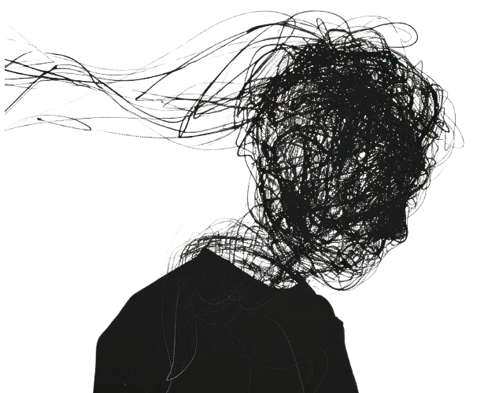

A variety of mental health disorders that impact your emotions, thoughts, and behavior are referred to as mental illness or mental health disorders. Depression, anxiety disorders, schizophrenia, eating disorders, and addictive behaviors are a few examples of mental illness.
Many people occasionally have mental health issues. But when persistent symptoms lead to regular stress and interfere with functioning, a mental health issue turns into a form of illness.
A mental illness may make you unpleasant and lead to issues in your day-to-day life, including relationships, job, and school. In the majority of situations, talk therapy (psychotherapy) and medication can be used to control symptoms.
𝐒𝐲𝐦𝐩𝐭𝐨𝐦𝐬
Depending on the disorder, the situation, and other variables, mental illness symptoms might change. Emotions, beliefs, and behaviors can all be impacted by the symptoms of mental illness.
𝗘𝘅𝗮𝗺𝗽𝗹𝗲𝘀 𝗼𝗳 𝘀𝗶𝗴𝗻𝘀 𝗮𝗻𝗱 𝘀𝘆𝗺𝗽𝘁𝗼𝗺𝘀 𝗶𝗻𝗰𝗹𝘂𝗱𝗲:
- Extreme mood changes of highs and lows
- Excessive fears or worries, or extreme feelings of guilt
- Significant tiredness, low energy or problems sleeping
- Detachment from reality (delusions), paranoia or hallucinations
- Inability to cope with daily problems or stress
- Problems with alcohol or drug use
- Major changes in eating habits
- Excessive anger, hostility or violence
- Suicidal thinking
- Feeling sad or down
- Confused thinking or reduced ability to concentrate
- Trouble understanding and relating to situations and to people
There are occasions when the symptoms of a mental health illness manifest themselves as physical difficulties. These symptoms may include stomach pain, back pain, headaches, or other aches and pains that cannot be explained.
When to see a doctor?
Consult a mental health specialist or your primary care physician if you exhibit any indications of a mental illness. The majority of mental diseases don't get better on their own, and if left untreated, they can worsen over time and lead to major issues.
Suicidal thoughts and behavior are common with some mental illnesses. If you think you may hurt yourself or attempt suicide, get help right away:
Call 911 or your local emergency number immediately.
Call your mental health specialist.
Contact a suicide hotline. In the U.S., call or text 988 to reach the 988 Suicide & Crisis Lifeline, available 24 hours a day, seven days a week. Or use the Lifeline Chat. Services are free and confidential.
Seek help from your primary care provider.
Reach out to a close friend or loved one.
Suicidal thinking doesn't get better on its own — so get help.
Helping a loved one
If your loved one shows signs of mental illness, have an open and honest discussion with him or her about your concerns. You may not be able to force someone to get professional care, but you can offer encouragement and support. You can also help your loved one find a qualified mental health professional and make an appointment. You may even be able to go along to the appointment.
If your loved one has done self-harm or is considering doing so, take the person to the hospital or call for emergency help.
Causes
Generally speaking, it goes without saying that a number of genetic and environmental factors are responsible for the development of mental illnesses.
Inherited traits. People who have blood relatives with mental illnesses are more likely to suffer from mental illnesses themselves. Your living circumstances may cause a mental disorder, and certain genes may raise your risk of getting one.
Environmental exposures before birth. Exposure to environmental stressors, inflammatory conditions, toxins, alcohol or drugs while in the womb can sometimes be linked to mental illness.
Brain chemistry. Neurotransmitters are naturally occurring brain chemicals that carry signals to other parts of your brain and body. When the neural networks involving these chemicals are impaired, the function of nerve receptors and nerve systems change, leading to depression and other emotional disorders.
Risk factors
Certain factors may increase your risk of developing a mental illness, including:
A history of mental illness in a blood relative, such as a parent or sibling
Stressful life situations, such as financial problems, a loved one's death or a divorce
An ongoing (chronic) medical condition, such as diabetes
Brain damage as a result of a serious injury (traumatic brain injury), such as a violent blow to the head
Traumatic experiences, such as military combat or assault
Use of alcohol or recreational drugs
A childhood history of abuse or neglect
Few friends or few healthy relationships
A previous mental illness
Mental illness is common. About 1 in 5 adults has a mental illness in any given year. Mental illness can begin at any age, from childhood through later adult years, but most cases begin earlier in life.
The effects of mental illness can be temporary or long lasting. You also can have more than one mental health disorder at the same time. For example, you may have depression and a substance use disorder.
Complications
Mental illness is a leading cause of disability. Untreated mental illness can cause severe emotional, behavioral and physical health problems. Complications sometimes linked to mental illness include:
Unhappiness and decreased enjoyment of life
Family conflicts
Relationship difficulties
Social isolation
Heart disease and other medical conditions
Self-harm and harm to others, including suicide or homicide
Legal and financial problems
Problems with tobacco, alcohol and other drugs
Weakened immune system, so your body has a hard time resisting infections
Poverty and homelessness
Missed work or school, or other problems related to work or school
Prevention
There's no sure way to prevent mental illness. However, if you have a mental illness, taking steps to control stress, to increase your resilience and to boost low self-esteem may help keep your symptoms under control. Follow these steps:
Pay attention to warning signs. Work with your doctor or therapist to learn what might trigger your symptoms. Make a plan so that you know what to do if symptoms return. Contact your doctor or therapist if you notice any changes in symptoms or how you feel. Consider involving family members or friends to watch for warning signs.
Get routine medical care. Don't neglect checkups or skip visits to your primary care provider, especially if you aren't feeling well. You may have a new health problem that needs to be treated, or you may be experiencing side effects of medication.
Get help when you need it. Mental health conditions can be harder to treat if you wait until symptoms get bad. Long-term maintenance treatment also may help prevent a relapse of symptoms.
Take good care of yourself. Sufficient sleep, healthy eating and regular physical activity are important. Try to maintain a regular schedule. Talk to your primary care provider if you have trouble sleeping or if you have questions about diet and physical activity.